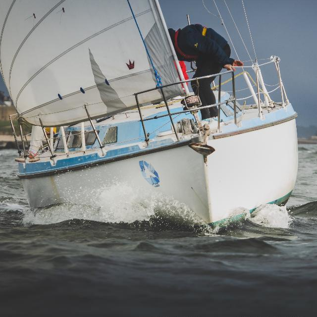
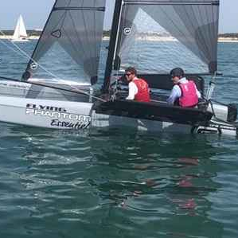
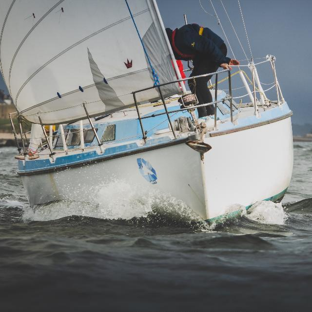
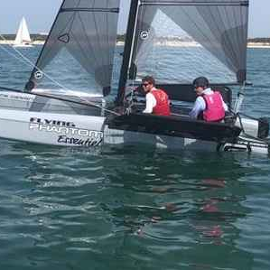

La charte du Passe‑Coque Club
La charte est en cours d'élaboration avec les référents de chaque bateau mis à disposition du Club,
leur liste n'étant pas encore définitive....
L'adhérent participe à la vie du boat club associatif social et solidaire :
Le tarif d'adhésion au boat-club :
- s'adapte aux ressources de l'adhérent (sur présentation volontaire de la feuille d'impôt),
- pourra être adapté en fonction du temps consacré par l'adhérent à la vie de l'association et du boat-club (minimum 2 jours de chantiers participatifs dans l'année).
L'adhérent bénéficie de l'assurance de l'association lors de l'usage d'un bateau du club.
L'adhérent s'engage à :
- respecter le matériel, rendre le bateau dans le même état technique qu'à sa prise en main, propre et rangé.
- apporter son avitaillement, son linge, ses consommables, ses produits d'entretien
- remettre à niveau les consommables (eau & carburant) après la navigation,
- respecter le référent qui investit son temps toute l'année pour permettre des navigations dans les meilleures conditions.
- participer aux activités collectives, à faire bénéficier le club de ses connaissances, partager du temps avec des
membres du club pour apprendre ou faire apprendre, contribuer à la convivialité, créer du lien, et ainsi rendre la navigation accessible à tous.
En bon marin, l'adhérent respecte les impératifs de sécurité :
L'adhérent s'engage à :
- communiquer son expérience en toute transparence au référent lors de la réservation,
- établir le programme de navigation en fonction des conditions de mer, de l'équipage et des capacités du voilier armé.
Il est le seul maître à bord et chef de bord même en présence du référent (les exceptions seront précisées au cas par cas sur la réservation),
- respecter et faire respecter les règles de sécurité à bord pour la sécurité des membres de l'équipage, des usagers de la mer et du matériel.
Le port du gilet de sauvetage est obligatoire.
L'adhérent respecte les principes d'Eco‑navigation :
L'adhérent s'engage à :
- prendre soin des bateaux lors de leur usage, contribuant ainsi à allonger leur durée de vie,
- utiliser les WC marins loin des lieux de baignade,
- utiliser les équipements portuaires (douches, lavabos, éviers, WC),
- utiliser des produits écologiques en petite quantité et d'origine végétale pour la vie à bord,
- limiter les emballages et déchets autant que possible, trier les déchets, ne jeter aucun déchet par-dessus bord,
- économiser l'utilisation de l'eau à bord, y compris en ne rin√ßant pas la coque à l'eau douce,
- privilégier l'utilisation de la godille au moteur pour les petites unités de navigation, dans le cas de manœuvres de port et au mouillage,
- choisir un fond sablonneux pour mouiller l'ancre du bateau afin de protéger les zostères.
- observer les animaux sans les nourrir ni les déranger.
 


